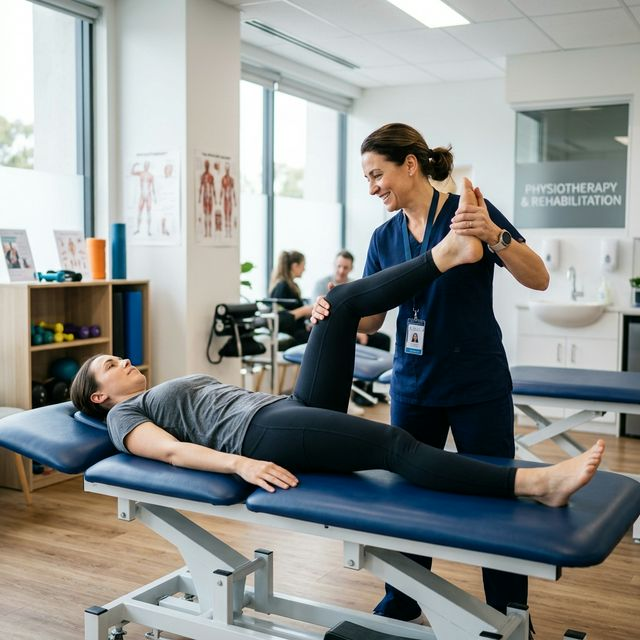

The Complete Guide to Sciatica Relief: Eliminating Nerve Pain for Good

Sciatica is more than just back pain; it is a sharp, electrical, or burning sensation that radiates down your leg. For many in Wayanad, it makes walking, sitting, or even sleeping unbearable.
At Physio Dynamics Panamaram, our clinical approach focuses on removing the "pinch" from the sciatic nerve through decompression, mobilization, and core stabilization guided by advanced clinical evidence.
What is Sciatica and Why Does it Happen?
The sciatic nerve is the largest nerve in your body. It starts in your lower back and travels all the way to your foot. When this nerve is compressed or irritated, it causes "radiating" pain.
- Herniated Disc: The soft jelly center of a spinal disc pushes out and presses the nerve root.
- Piriformis Syndrome: A muscle in your buttock becomes tight and compresses the nerve.
- Lumbar Stenosis: Narrowing of the spinal canal due to age-related changes.
- Spondylolisthesis: One vertebra slips over another, pinching the nerve.
5 Clinical Exercises to Decompress the Sciatic Nerve
McKenzie Press-Ups (Extension)
Effect: If your sciatica is caused by a bulging disc, this move pushes the disc material back toward its center, away from the nerve.
- Lie on your stomach.
- Slowly push your upper body up with your hands while keeping your hips on the floor.
- Hold for 2 seconds. Repeat 10 times.
- If pain in the leg decreases, continue for 10 more reps.
Sciatic Nerve Flossing (Glides)
Why it works: Nerves need to slide smoothly through your muscles and joints. This "flossing" move breaks up adhesions around the nerve without overstretching it.
- Sit upright in a chair with both feet flat.
- Straighten the affected leg while looking up toward the ceiling and flexing your ankle back toward you.
- Then, bend the knee and point your toes down while looking down at your lap.
- Perform 15 gentle repetitions 3 times a day.
Piriformis Seat Stretch
- Lie on your back with knees bent.
- Cross the affected leg's ankle over the opposite knee.
- Gently pull the non-affected thigh toward your chest.
- Hold for 30 seconds. Repeat 4 times.
Critical Warning: The "Red Flags" of Sciatica
While most sciatica heals with physiotherapy in Wayanad, some symptoms require immediate surgical evaluation:
Saddle Anesthesia
Numbness in the groin or area you would sit on a saddle. This is a medical emergency.
Bladder/Bowel Changes
Loss of control over urination or bowel movements.
Frequently Asked Questions (FAQ)
Diagnostic Tools
Our clinic in Panamaram provides precise clinical testing to distinguish between disc-related sciatica and muscle-related compression.
Find Our Clinic
Physio Dynamics
UB City Centre Building, Near Crescent Public School,
Panamaram, Wayanad, Kerala 670721
+91 62829 29104
physiodynamics10@gmail.com
Mon - Sat: 8:00 AM - 7:00 PM
Sunday: Closed (Emergency Only)